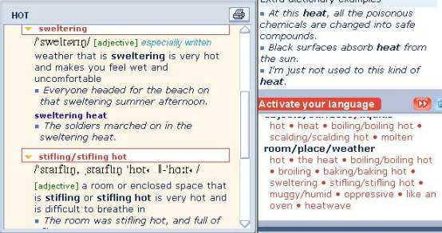

The 'Activate your language' section is there to help you develop your vocabulary by suggesting more precise words for common meaning areas.
When you look up a word that forms part of the Longman Language Activator, different meanings of the word will appear in the 'Activate your language' box. You can see in the illustration below that the word heat can be used to describe the temperature of a room, a place, or the weather.
Clicking on any of the words under the room/place/weather heading will open a window showing many different words or phrases that describe the heat when talking about rooms, places or weather.
Click on the small yellow arrows to open the definitions and see information on how and when to use the word or phrase. In this example, the word sweltering will be best used to describe the climatic temperature, stifling will be best used to describe a room’s temperature.

Click on the red double arrow button to go to the main Activator section.